Меры безопасности
-
Природные ЧС
1. Предупреждение: Развитие систем мониторинга и своевременного оповещения о возможных природных опасностях.
2. Обучение: Проведение обучающих курсов и тренировок для населения по безопасным действиям в случае катастроф.
3. Инфраструктура: Создание и поддержание защитных сооружений и инженерных систем для минимизации ущерба.
4. Планирование: Разработка и обновление планов эвакуации и реагирования в случае чрезвычайных ситуаций.
5. Помощь: Гарантирование доступа к медицинской помощи, продовольствию, воде и временному укрытию для пострадавших.
6. Восстановление: Проведение работ по восстановлению инфраструктуры, жилищ и общественных услуг после происшествия.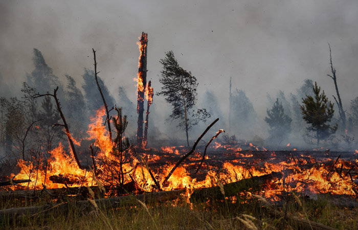 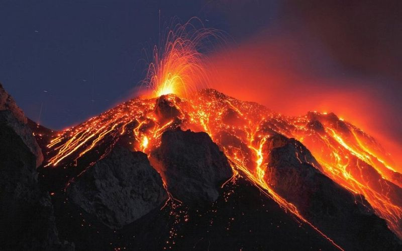
-
Техногенные ЧС
1. Мониторинг: Установка систем контроля за техникой.
2. Обучение: Проведение тренировок по безопасности.
3. Технические меры: Регулярное обслуживание оборудования.
4. Планирование: Разработка планов действий.
5. Безопасность населения: Создание систем оповещения и эвакуации.
6. Экологическая защита: Предотвращение загрязнения окружающей среды.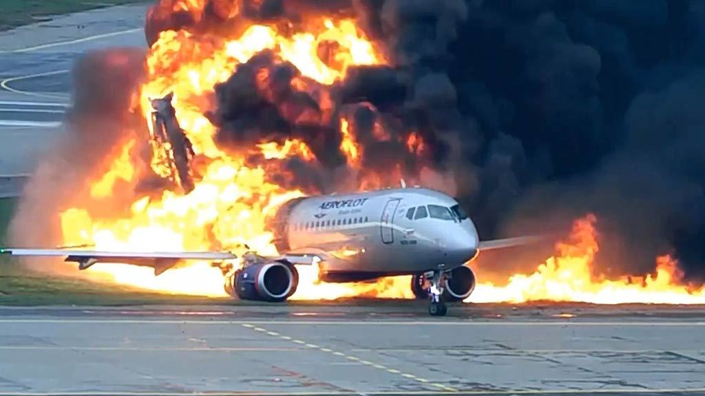 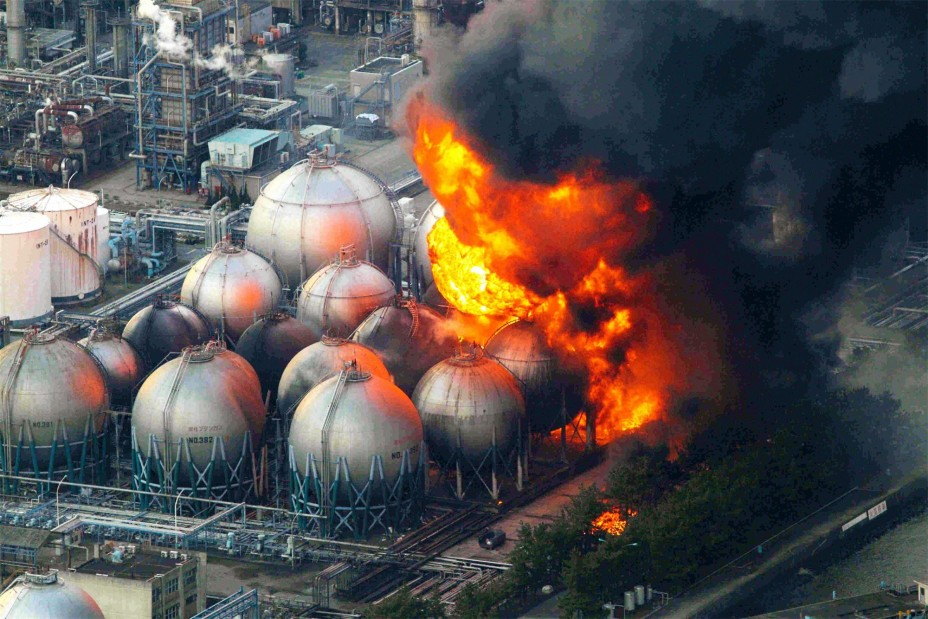 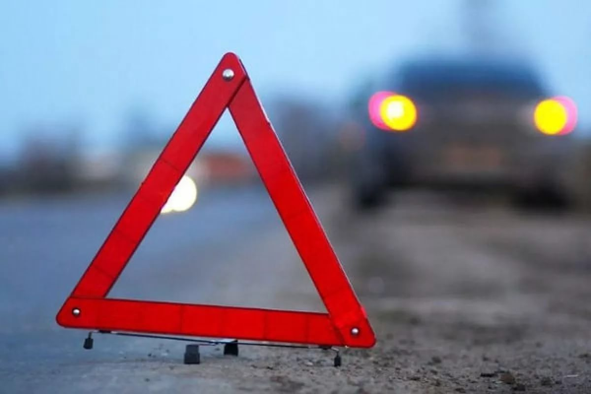 -
Биологические ЧС
1. Мониторинг здоровья: Организация систем мониторинга заболеваемости и распространения инфекций.
2. Предупреждение: Разработка программ предотвращения распространения инфекций и вакцинации.
3. Обучение и информирование: Проведение образовательных кампаний о методах предотвращения инфекций и правилах гигиены.
4. Готовность и реагирование: Разработка планов действий для эффективного реагирования на вспышки инфекций, включая меры по изоляции и лечению.
5. Контроль границ и перемещений: Установка контроля за перемещениями людей и животных для предотвращения распространения инфекций.
6. Медицинская помощь и лечение: Обеспечение доступа к качественной медицинской помощи и лечению для пострадавших от инфекций.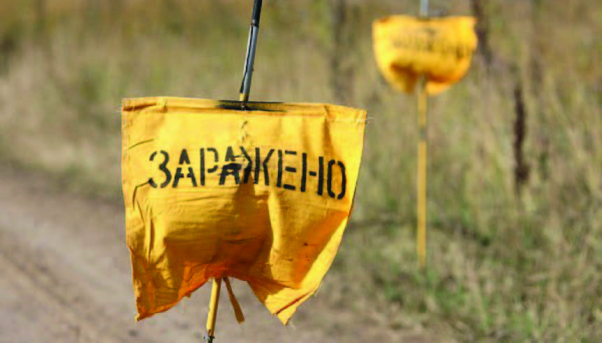 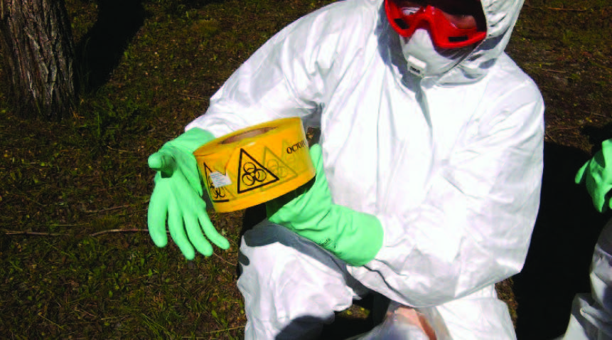 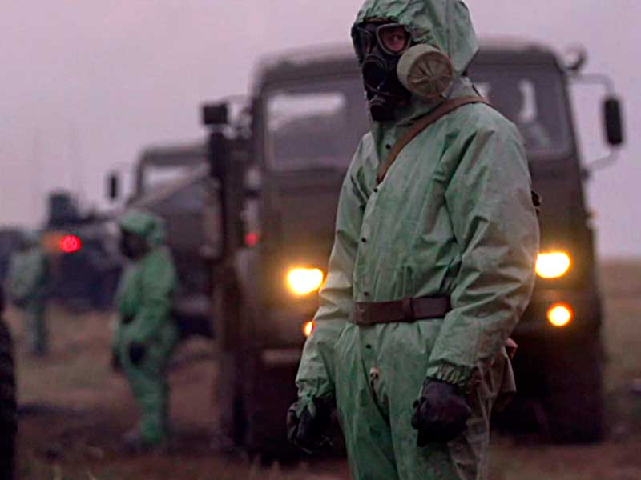 -
Социальные ЧС
1. Мониторинг: Организация систем наблюдения за социальными индикаторами.
2. Диалог и медиация: Проведение медиации для разрешения конфликтов.
3. Образование: Проведение программ по урегулированию конфликтов и толерантности.
4. Поддержка правопорядка: Укрепление работы правоохранительных органов.
5. Социальная поддержка: Обеспечение доступа к социальным услугам для уязвимых групп.
6. Доверие и солидарность: Поддержка инициатив, способствующих укреплению общественного доверия.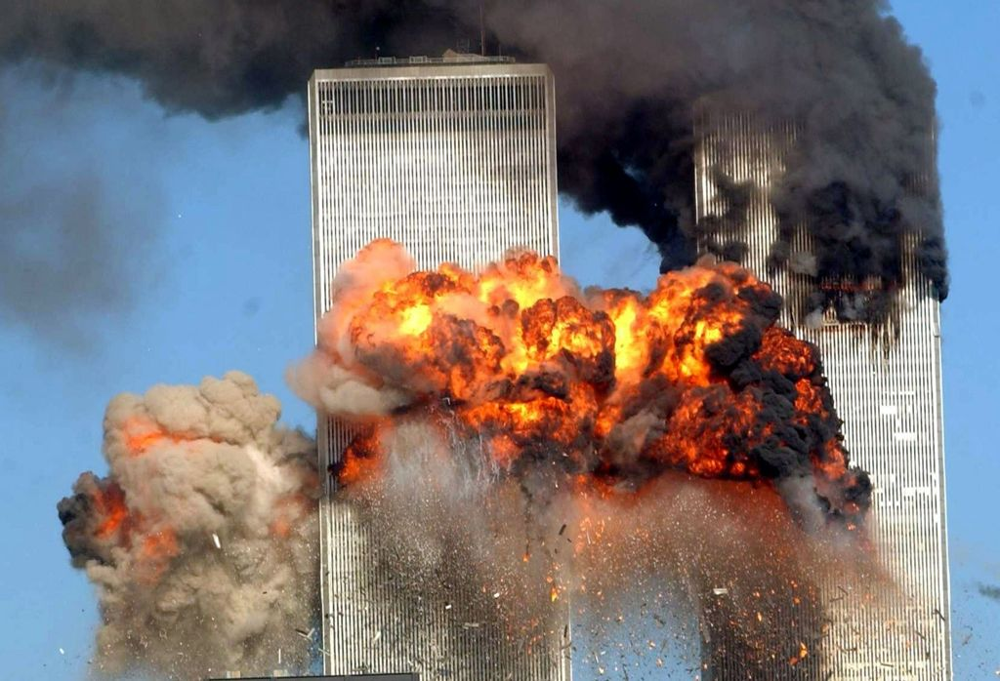 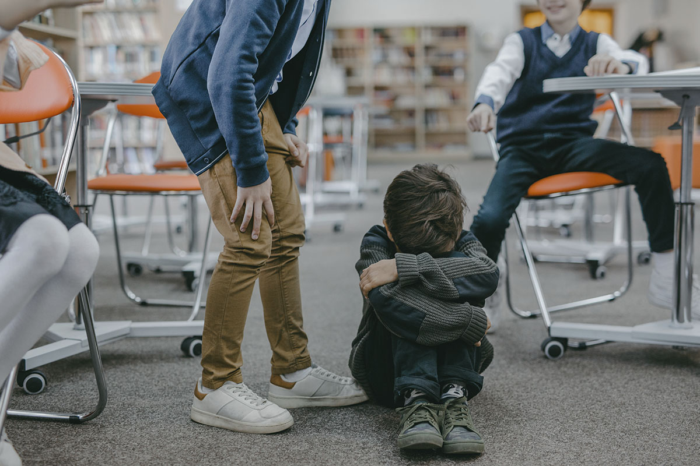 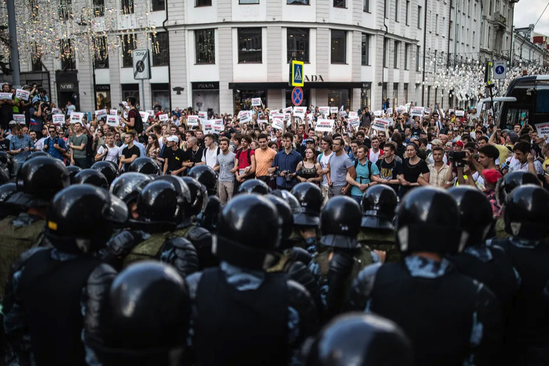